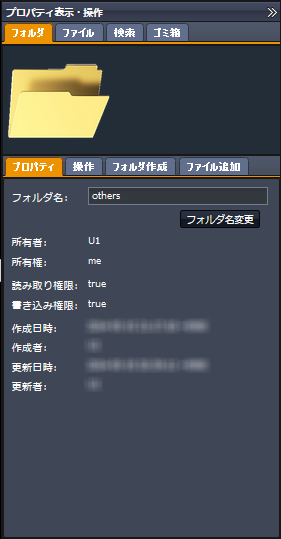

SecretFilesマニュアル
3. SecretFilesサービス
3.2 各ペインの説明
3.2.4 右ペイン(プロパティ表示・操作ペイン)
 右ペインは初期状態では、右端に隠れた状態になっています。
右ペインは初期状態では、右端に隠れた状態になっています。表示されているタイトルバーの上端にある
 をクリックして下さい。
をクリックして下さい。表示領域がスライドして、ペインが表示されます。

3.2.4.4 検索
選択したフォルダの中にあるファイルを検索することができます。左ペインまたはファイル全体表示ペインでフォルダを選びます。
下記のいずれかの項目を入力し、「検索開始」ボタンをクリックします。
検索条件
| ファイル名: | 検索するファイル名またはその一部を入力した下さい。 |
|---|---|
| サイズ: 最小(バイト): | ここで入力した数値より小さいサイズのファイルは検索対象となりません。 |
| サイズ: 最大(バイト): | ここで入力した数値より大きいサイズのファイルは検索対象となりません。 |
作成情報の条件
| 作成者名: | ファイルを追加した利用者のユーザ名を入力して下さい。 |
|---|---|
| 自己作成: | 上記を入力する代わりに、このチェックボックスをチェックすると、自分が作成したファイルのみが検索対象となります。 * 作成者名に自分のユーザ名を入力した場合は、ここでチェックした時と同じ条件で検索します。 |
| 作成日付(はじめ): | ここで入力した日付よりも前に追加したファイルは検索対象になりません。 |
| 作成日付(終わり): | ここで入力した日付よりも後に追加したファイルは検索対象になりません。 |
日付の入力時は、下のようなウィジェットが表示されます。
上端の年月表示の箇所をクリックすると、別の年月を選択することができます。
左右の矢印をクリックすると、前月あるいは翌月に移動します。
表示されている日付をクリックするか、「今日」というボタンをクリックすることで日付を選択することができます。
更新情報の条件
| 更新者名: | 同一名でファイルを更新した場合、その更新者のユーザ名を入力して下さい。 |
|---|---|
| 自己更新: | 上記を入力する代わりに、このチェックボックスをチェックすると、自分が更新したファイルのみが検索対象となります。 * 更新者名に自分のユーザ名を入力した場合は、ここでチェックした時と同じ条件で検索します。 |
| 更新日付(はじめ): | ここで入力した日付よりも前に更新したファイルは検索対象になりません。 |
| 更新日付(終わり): | ここで入力した日付よりも後に更新したファイルは検索対象になりません。 |
検索オプション
上記以外のファイルの属性はオプション属性としてリスト表示されます。
表の左端のチェックボックスをチェックし、内容の欄に条件を入力して下さい。
内容の欄に条件を入力する場合には、該当する箇所でダブルクリックして下さい。
* 入力した条件は、完全に一致した場合にのみ検索合致することになります。
サブフォルダも検索
このチェックボックスをチェックすると、選択したフォルダの配下にあるフォルダも検索対象とします。